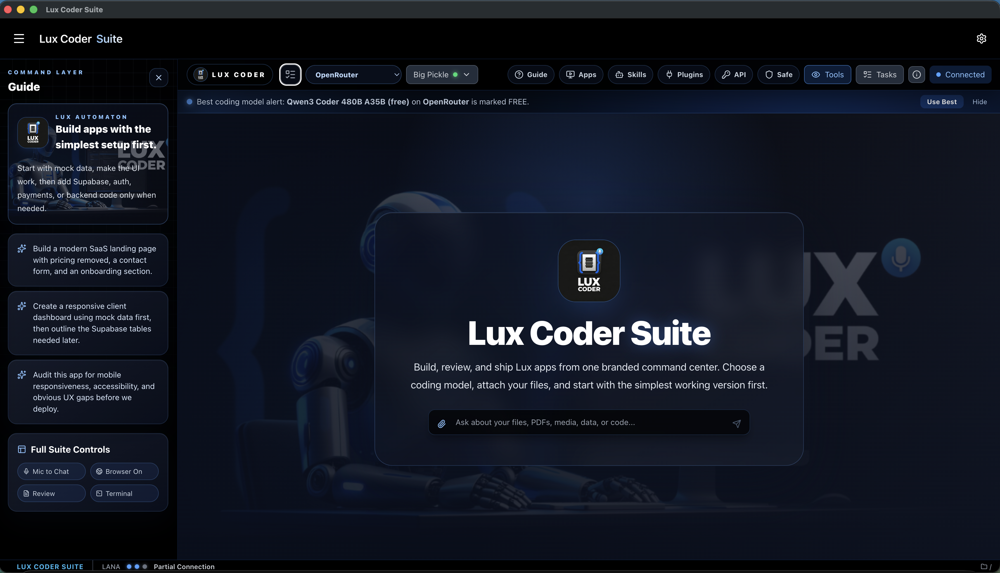
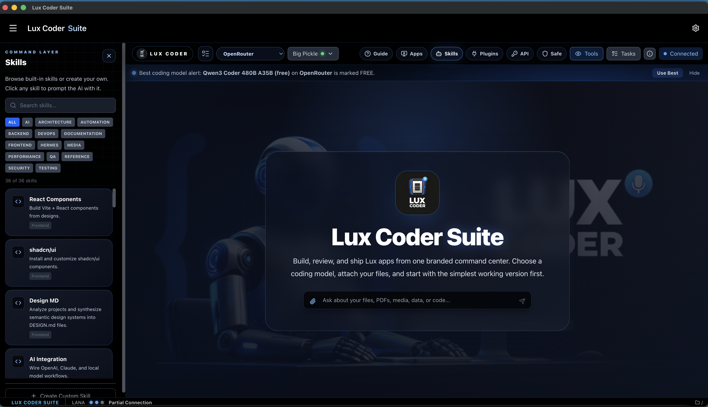
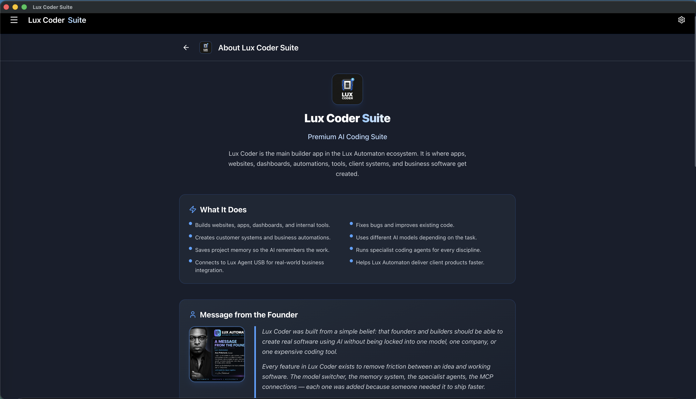

Lux Coder is a comprehensive AI coding command center that runs as a standalone desktop app or directly inside your editor. Multi-model orchestration, persistent memory, specialist agents, visual diff review, branded exports, and seamless hardware integration — all from one private, sovereign workspace.
Each capability was built to solve a real problem developers face daily. No filler, no gimmicks — just tools that ship software faster.
A full visual AI workspace available as a native desktop application or built directly into your editor sidebar. No browser windows, no terminal juggling — manage every AI interaction through an integrated panel that sits right next to your code. Trigger builds, review outputs, and manage task queues without ever switching contexts.
Access 45+ AI models from six major providers through a single unified interface. Connect OpenRouter, OpenAI, Anthropic, Google Gemini, Groq, and NVIDIA endpoints simultaneously. Switch between models mid-conversation based on task complexity — use fast models for scaffolding and premium models for architecture decisions.
When one API key hits a rate limit, quota cap, or provider outage, Lux Coder automatically rolls over to your next configured provider. No interrupted sessions, no manual switching. Your coding workflow continues without a single dropped request — the failover is silent and instant.
Every coding conversation is automatically saved and indexed locally. Close VS Code, restart your machine, or switch projects — your full conversation history and build context persist. Restore any session instantly and continue exactly where you left off with complete context continuity.
Local markdown knowledge graphs that give the AI persistent awareness of your project. Store architecture rules, API documentation, coding conventions, and domain constraints in structured wiki files. The AI references these automatically, so every response respects your project's real boundaries — not generic assumptions.
Deploy purpose-built AI agents that understand specific domains at an expert level. Instead of one generalist model trying to do everything, Lux Coder routes tasks to trained specialists — a frontend agent that knows React patterns, a security agent that catches OWASP vulnerabilities, a DevOps agent that writes proper CI/CD configs.
Never blindly accept AI-generated code changes. Lux Coder presents every modification in an interactive git-style split panel — additions highlighted in green, deletions in red. Accept individual hunks, reject specific changes, or refine before committing. Full control over what enters your codebase.
Run multiple concurrent AI sessions across different concerns simultaneously. Have one session building your frontend components while another debugs your API layer and a third researches a deployment strategy. Sub-agents report back in the background while you focus on core logic — true multi-threaded development.
Turn your coding sessions into client-ready proof of work. Export conversation logs, benchmark outputs, and workspace views as high-fidelity branded PDFs or screenshots. Everything renders client-side with dark theme preservation, glow-safe rendering, and clean Lux branding — perfect for invoices, reports, and project deliverables.
Lux Coder connects seamlessly with the wider Lux Agent ecosystem. Bridge your coding outputs to CRM pipelines, link hardware databases, and synchronize with Lux Agent USB for a fully connected sovereign workflow. While Lux Agent manages business operations and client data, Lux Coder handles the building — together they form a complete system.
Real screenshots from the Lux Coder Suite — every panel, every control, every detail.




Lux Coder ships with 36+ purpose-built skills that cover the full software development lifecycle — from architecture planning to production deployment.
Each skill includes templates, prompts, and constraints tailored to its domain. Custom skills can be added through the Skills Library panel.
The native developer loop — each step powered by specialized background agents that handle the heavy lifting.
Launch the Lux Coder standalone application or open the editor side panel. Your project context loads automatically.
Choose from 45+ AI models across six providers, or point to a custom local endpoint for air-gapped work.
Deploy LANA or any of the 16 specialist sub-agents to edit, write, review, or debug your project files.
Examine every AI-generated change in a visual split panel. Accept, reject, or refine hunks before committing.
Commit conversational state, architecture decisions, and constraints to your local Memory Wiki files.
Compile branded PDFs, session screenshots, or workspace summaries for client-ready proof of work.
Deploy the validated application with confidence. Every change was reviewed, documented, and exported. Task complete.
Professional overviews of Lux Coder's full ecosystem — features, integration, and value.
Real screenshots from Lux Coder Suite — command center, API switcher, skills library, and more.
Lux Coder gives you the control of open tooling, the polish of a premium product, and the flexibility to orchestrate the best AI models from one sovereign VS Code workspace.
Part of the Lux Automaton ecosystem, alongside Lux Agent USB and Success Packs.